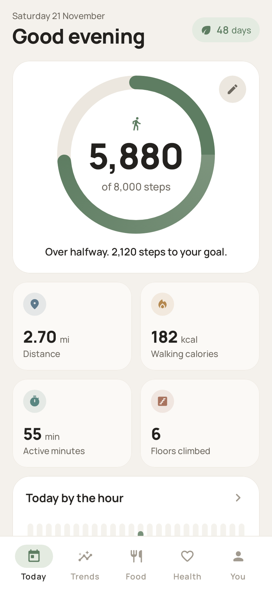
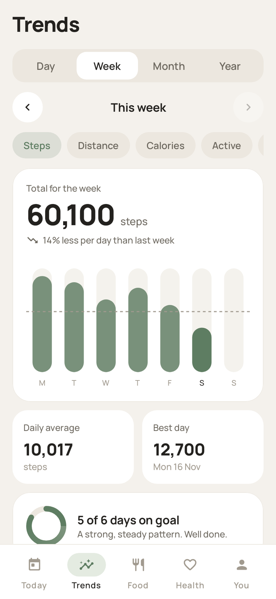
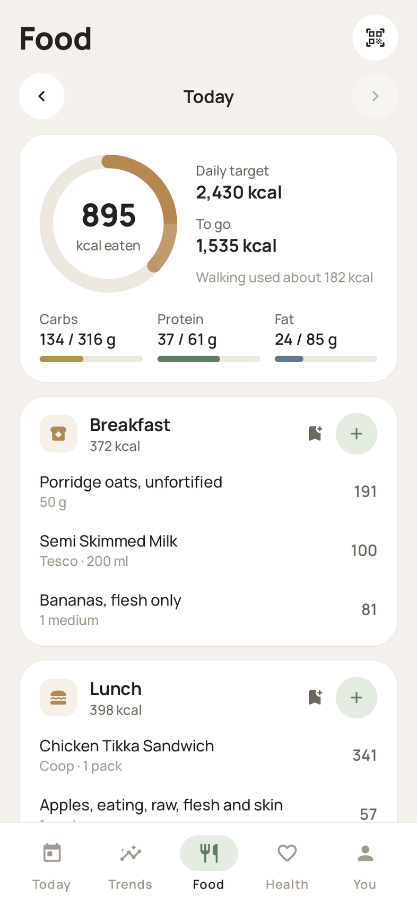
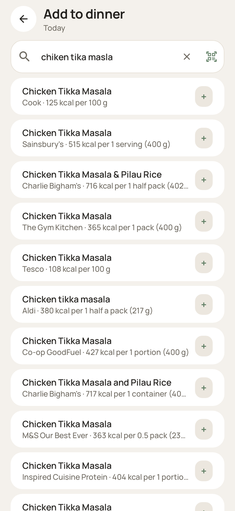
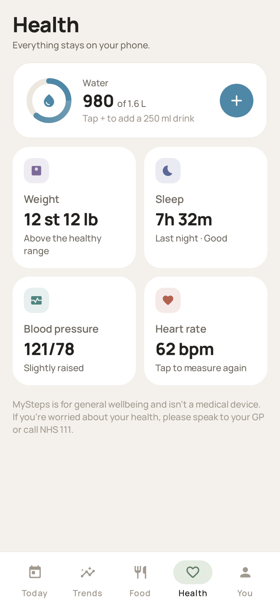
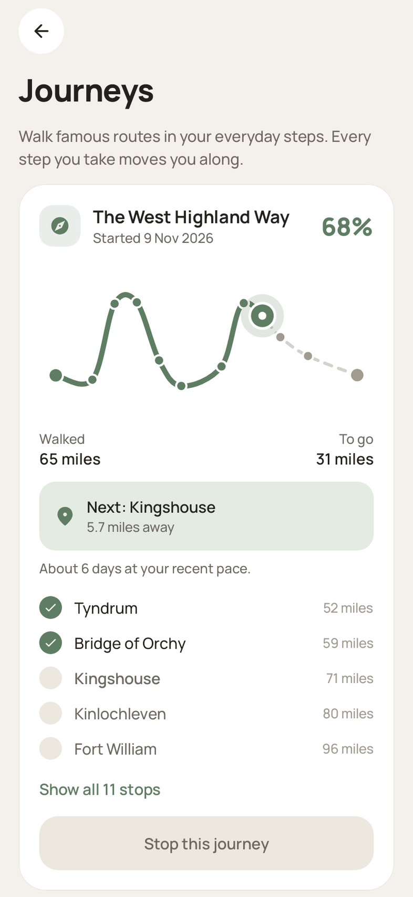
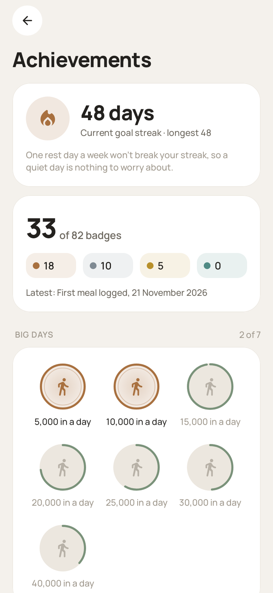
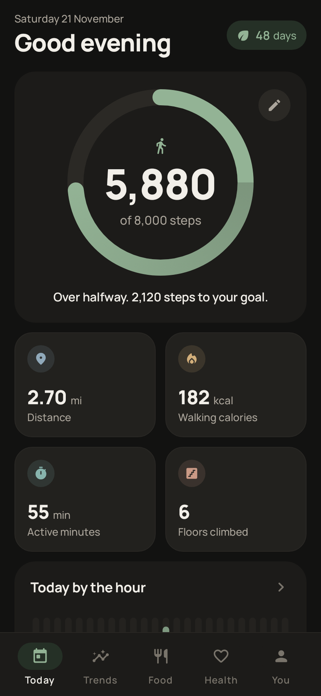

Every step, counted kindly.
MySteps is a step counter and health tracker for Android. It counts your steps all day, times your walks, and keeps your water, weight, sleep, blood pressure, heart rate and meals in one calm, tidy place.
It is free, with no adverts and nothing to unlock. There is no account, and your records stay on your phone.
Download for AndroidHow to install
- Version 1.0.1
- Android 8 or later
- 18 MB
Free, with nothing to unlock. No adverts, no account with the developer, no tracking. Compare or read the release notes.
Chrome may say the file might be harmful. It shows this for app files that do not come from Google Play. Choose Download anyway.

- No subscriptionEvery feature is in the free app.
- No advertsNone in the app and none on this site.
- No accountYour records stay on your phone.
- Works offlineEven the 147,689-food diary.
A look inside
These are the real screens, drawn from the app's own code with made-up days. Swipe or scroll sideways to see them all.







How it works
Put your phone in your pocket and get on with your day. MySteps does the counting, and shows you how it is adding up.
Tell it a little about you
Your height, weight and a daily goal. It uses them for distance, calories and a sensible food target, and nothing else.
Just walk
Steps are counted in the background by your phone's step sensor. Start a timed walk from Today whenever you like.
Watch it add up
Streaks grow, badges arrive and your journey moves on. Trends shows the weeks, months and years.
Everything is in, and all of it is free
Nothing below is held back for a paid tier, because there is no paid tier.
Steps
- Counts every step, quietly
- Your phone's own step sensor, accurate and gentle on the battery. Counting carries on after a restart.
- A clear Today page
- The day's ring, distance, walking calories, active minutes and floors, with an hour-by-hour chart.
- Walks, with or without a route
- Time a walk with pause and resume. Switch on GPS and your route is drawn as a clean outline, with no map service.
- Trends and records
- Day, week, month and year, with your best day, best week and longest streak.
Keeping going
- Streaks that are fair
- One rest day a week does not break a streak, and an unfinished today never does.
- 82 badges, four tiers
- Big days, streaks, lifetime steps, walks, climbing, healthy habits and journeys, bronze to platinum.
- Fifteen journeys
- Hadrian's Wall, the West Highland Way, the Camino, Route 66 or right round the world, a day's steps at a time.
Food
- A food diary that forgives typing
- 147,689 foods: everyday UK foods from the government's food tables and UK branded products. It works with no signal.
- Barcode scanning on the phone
- Point the camera at a barcode. It is read on your phone, and nothing is looked up online.
- A sensible calorie target
- Worked out from your details, your real step average and your goal, and never set below a safe level.
Health
- Water, weight and sleep
- A drink in one tap, weight with a healthy range, and last night's sleep.
- Blood pressure and heart rate
- Readings logged with plain words for what they mean, and a reminder to speak to your GP when it matters.
- Eight widgets
- Including a water widget that adds a drink with one tap, without opening the app.
Your health is your business
No servers
MySteps has no accounts and no servers. The developer receives nothing from the app.
Offline food and barcodes
The food list is inside the app and barcodes are read on the phone.
No ads, no tracking
There is no advertising, analytics or tracking, in the app or on this site.
Installing and updating
MySteps is not on Google Play, so your phone asks a couple of extra questions the first time.
Download the app file
Tap Download on your phone. The file is called MySteps.apk and is about 18 MB. If Chrome says the file might be harmful, choose Download anyway.
Allow the install
Open the file. The first time, Android asks you to allow your browser to install apps. Allow it, go back and tap Install. If Google Play Protect steps in, choose More details, then Install anyway.
Updating later
MySteps tells you when a newer version is out. Install the new file over the old one and everything you have saved is kept.
Version 1.0.1, released 21 November 2026. See the release notes, or check your download.
Questions
Is MySteps really free?
Yes. There's no paid version, no subscription, no trial and no adverts, and nothing in the app is locked.
Is MySteps on Google Play?
No. MySteps is a personal project and is downloaded from this site as an Android app file. It needs Android 8 or later, which covers almost every phone in use.
Does it use the internet?
Only to check GitHub once a day for a newer version, so it can tell you one is ready, and you can switch that off. Step counting, the food list, barcode scanning, everything else works with no signal at all.
Where are my records kept?
On your phone, in the app's private storage. They also go into any backup file you save, the backup folder if you choose one, and Health Connect if you switch sharing on.
Will it drain my battery?
No. MySteps uses the phone's dedicated step sensor, which is built for exactly this and uses very little power. GPS is only used during a walk you start, and only if you ask for a route.
Why does it show a notification all the time?
Android requires an app that counts steps in the background to show one. It's set to the quietest level and shows your steps and progress.
How accurate is the food list?
Everyday foods come from McCance and Widdowson's tables, the UK government's reference. Product details come from Open Food Facts, which is built by volunteers, so please check the pack if something looks wrong. You can always add your own food from the label.
Is MySteps medical advice?
No. It's a wellbeing app for keeping a record. Blood pressure ranges, calorie targets and the rest are general guidance. If anything worries you, please speak to your GP or pharmacist, or call NHS 111.
How do I move to a new phone?
Open You, then Backup and sync, and choose Save a backup. Install MySteps on the new phone and choose Restore a backup. Everything comes across, and there's an Undo if you change your mind.
Can it use my watch's steps?
Yes, through Health Connect. Switch on Add steps from my watch. For each hour MySteps counts whichever is larger, the phone's steps or the watch's, so nothing is counted twice.
How do I update MySteps?
When a new version is out, a banner on Today says so, with a download link. Install it over the one you have and your records are kept.
Every step counted, and nobody watching but you
Free, with no adverts and nothing to unlock. Made by the developer of several other free Android apps: see them all.